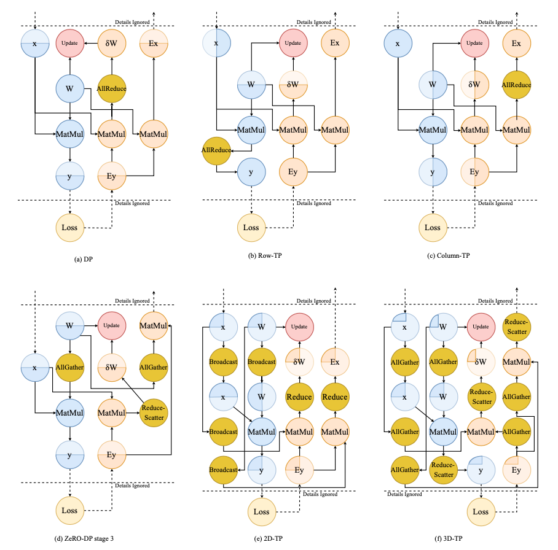
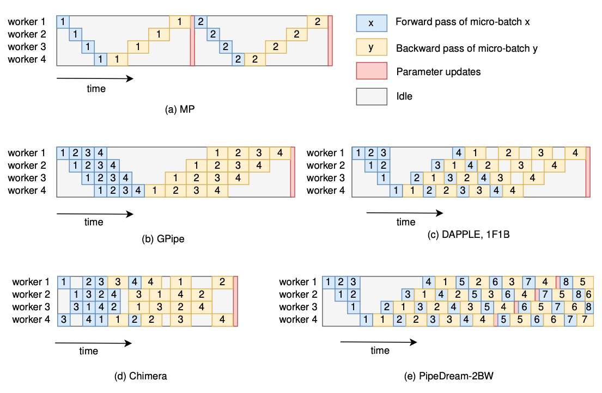

Auto Parallel
A Survey on Auto-Parallelism of Neural Networks Training
Peng Liang et. al. National University of Defense Technology
Abstract.
DL --> large model --> distributed training --> heterogeneous cluster --> auto-parallelism --> large scale DL model
- basic parallelism schemes, communication cost and memory consumption
- current works, strategies, common methods
- promising trends
Introduction
Parallelism strategy
- intra-operator parallelism: data parallelism, tensor parallelism (intra-layer model parallelism)
- inter-operator parallelism: inter-layer model parallelism, pipeline parallelism
Hybrid parallelism
- data + model + pipeline
- Megatron-LM, DeepSpeed(3D parallelism)
Manual --> Auto
All practicable works: a few combinations of parallelism schemes, weak scalability
- e.g. cost model
- automatic parallelism search space can be further expanded
- heterogeneous devices, communication pace/topology
Challenges
- detailed analysis of different parallelism schemes
- trade-offs between different parallelism schemes
- load-balance across heterogeneous devices
- optimization of network communication
- trade-off between runtime and strategy performance in finding strategy
Parallelism schemes
Data parallelism
- Vanilla DP
- ZeRO-Powered DP
- Communication of DP, Centralized/Decentralized architecture
ZeRO-DP
- three stages: 1 partition optimizer states, 2 partition gradients and optimizer states, 3 partition parameters
- stage 1 and 2: reduce-scatter accumulated gradients, stage 3: all-gather updated parameters
- solve redundancy problem with 50% more communication volume (all-gather)
Model parallelism
- Intra-layer MP, tensor parallelism, partition weight tensor
- Inter-layer MP

Pipeline parallelism
The partition pattern of PP is the same as that of MP
- inter-layer MP = PP
- PP = well scheduled pipelined MP
- overlap computation, solve low-utility of MP
PipeDream (Microsoft), GPipe (Google)

Strategy Searching Methods for Auto-Parallelism
- NP-hard problem
- classic-algorithm-based v.s. machine-learning-based
Classic-algorithm based methods
- recursive algorithm
- dynamic programming algorithm
- integer linear programming algorithm
- breath-first-search (BFS) algorithm
Machine-learning based methods
- Monte-Carlo Markov Chain (MCMC)
- Monte-Carlo Tree Search (MCTS)
- reinforcement learning
Conclusion
Accelerating strategy searching
- grouping
- profiling-base cost model
- using heuristics
Optimizing parallelism strategies
- topology-aware computation
- topology-aware communication
Supporting more parallelism schemes